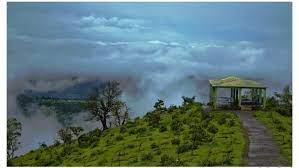
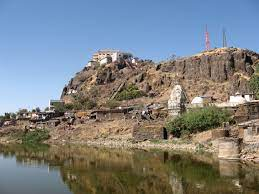

HILLS STATION
Nestled deep within the Sahyadri mountains in India, almost bordering the western Indian state of Maharashtra, is Gujarat’s only hill station – Saputara. Home to a massive and beautiful lake, green rolling hills dotted by velvety meadows, and several monsoon-fed waterfalls, the hill station of Saputara makes for a pretty sight. Very often, you will be reminded of Switzerland’s charming villages with picturesque mountain peaks and glittery turquoise lakes. And then, you will be transferred back to an exotic rural microcosm in India bathed in the rich culture of native tribes, local food, and ethnic art. That is the magic of Saputara, the hidden gem of Gujarat which is also one of the prettiest hill stations that I have visited in India.

Wilson hills
Wilson Hills is a hill station in the Indian state of Gujarat. It is near Dharampur Taluka and is also the nearest hill station to Surat. Presently Tourism Department is thinking of a development project here too. If you come in summer you will enjoy cool weather & famous local mangoes. Wilson Hills stands in a densely forested region close to the Pangarbari Wildlife Sanctuary. It is one of the few hill stations in the world from which it is possible to glimpse the sea. It has an average elevation of 750m (2500 feet). The Wilson Hills are popular during the summer months as it enjoys a cooler and less humid climate than the surrounding area.

Pavagadh
Pavagadh is an ancient Triassic Period location with Enriched History from periods of Treta Yuga and Dvapara Yuga.[citation needed] In present day, Pavagadh is a municipal operated region in Panchmahal district about 46 kilometres (29 mi) away from Vadodara in Gujarat state in western India. It is known for a famous Mahakali temple which draws thousands of pilgrims every day. It is a tribal area populated predominantly by the Rathwas. The area of this locality Champaner-Pavagadh Archaeological Park was inscribed by UNESCO as a World Heritage Site in 2004.[